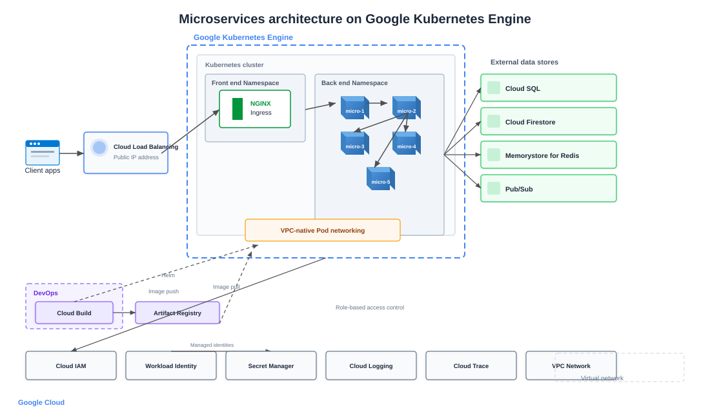

Microservices Architecture on Google Kubernetes Engine
Building resilient microservices on GKE with Cloud Load Balancing, Artifact Registry, and managed Google Cloud data services.
Google Kubernetes Engine was an early managed Kubernetes option, and at VF Interactive we adopted GKE for workloads that benefited from tight integration with BigQuery, Pub/Sub, and Cloud SQL. This architecture reflects a production-ready GKE layout from 2020 onward.

Traffic flow
Users connect through Cloud Load Balancing with a global anycast IP. Traffic enters an Ingress controller in the frontend namespace, which routes to backend microservices based on URL paths and hostnames.
Microservice layout
Services run in isolated namespaces with microservice1 acting as the edge API, microservice2 handling orchestration, and microservice3 to microservice5 owning data access. VPC-native GKE networking assigns each pod a routable IP from your VPC subnet.
CI/CD and images
Cloud Build triggers on commits to build and scan images. Artifacts land in Artifact Registry. Helm or Config Sync deploys workloads. Workload Identity lets pods authenticate to GCP APIs without static keys.
Data and messaging
External stores include Cloud SQL for relational data, Firestore for document workloads, Memorystore for Redis caching, and Pub/Sub for event-driven communication between services.
Security and operations
Cloud IAM and Workload Identity enforce least-privilege access. Secret Manager stores sensitive configuration. Cloud Monitoring and Cloud Trace deliver metrics, logs, and request tracing.